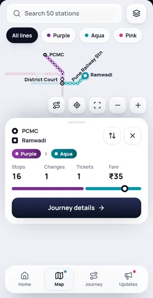

Pune Metro Guide app
Plan any trip on the Purple, Aqua and Pink lines, check the official fare and catch the last train, on your phone and without a connection. Free, with no account and no ads.

Inside the app



What it does
Works offline
All the metro data is on your phone, and it updates fares and timings when you're online.
Last-train reminder
See when the last train leaves your station and get a reminder 10, 20 or 30 minutes before.
Nearest station
Find the closest open station and get walking directions in your maps app.
Official fares
The fare for every trip from the operators' own charts, including trips that need two tickets.
Network map
All three lines on one map. Zoom in, filter by line and watch your route draw itself.
English, मराठी, हिंदी
The whole app in your language, with station names as they appear on the signs.
Places by metro
Landmarks, temples, museums and stations near the metro, with distances.
No account, no ads
Free, with no sign-up and no tracking. Your location is used only when you ask.
What it doesn't do
- It doesn't sell tickets. It shows the fare and the official ways to buy: WhatsApp, the operator's app or the counter.
- There's no live train tracking: neither operator publishes it. Timings come from the official timetables.
- It's unofficial and independent, not made by Maha Metro, Puneri Metro or PMRDA.
Questions
Is there an app for Pune Metro?
Yes. Maha Metro has its official app for buying tickets, and Pune Metro Guide is a free, independent app for planning: routes, official fares, timings and the last train, in English, Marathi and Hindi.
Does the app work without the internet?
Yes. All the metro data is on your phone. When you're online it checks for newer fares and timings.
Can I buy a metro ticket in Pune Metro Guide?
No. It shows the fare for each ticket on your trip and the official ways to buy it.
Is it free? Do I need an account?
It's free, with no account, no ads and no tracking. Your location is used only when you ask for the nearest station, and never leaves your phone.
Is there an iPhone version?
Yes. It's on the App Store for iPhone, and on Google Play for Android.
Help from the operators
| Maha Metro helpline | 1800 270 5501 |
|---|---|
| WhatsApp tickets | +91 94201 01990 |
| Maha Metro | punemetrorail.org |
| Puneri Metro | punerimetro.in |
Found a mistake on this site? Email care.mobileutility@gmail.com.
 Pune Metro Guide app · free on Android and iPhone
Pune Metro Guide app · free on Android and iPhone
Your Pune Metro journey, simplified.
Explore routes, discover stations and plan smarter journeys with the free Pune Metro Guide app.
- Works offline
- Last-train reminder
- Nearest station
- English, मराठी, हिंदी
What's in the app · Unofficial, like this website.